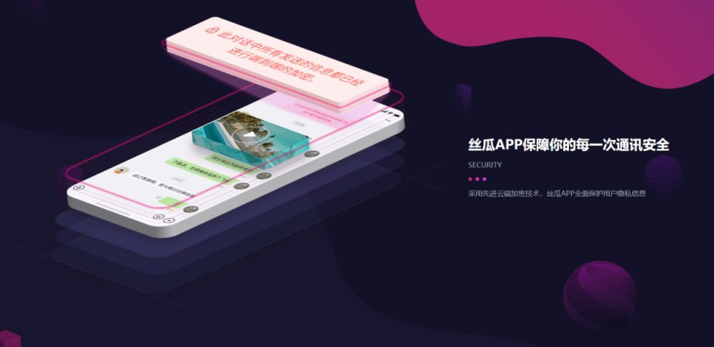

丝瓜聊天好用吗？
丝瓜聊天是一款注重隐私保护的即时通讯工具，采用端到端加密和阅后即焚功能，确保用户通信安全。它没有广告，界面简洁，适合重视隐私的用户。

丝瓜聊天的隐私保护功能解析
端到端加密技术的优势
-
数据加密全程无视线可窥：端到端加密技术确保了用户的信息在发送和接收过程中都处于加密状态，只有通信的两端设备能解密。这意味着即使是服务提供商也无法访问用户的聊天内容，从而保护用户的隐私不被泄露。
-
增强的安全性：相比于传统的服务器存储数据，端到端加密技术通过使信息始终保持加密状态，降低了数据被恶意第三方拦截或篡改的风险，提升了用户的通信安全性。
-
无中介干预：使用端到端加密技术的应用不会将用户的聊天记录保存于服务器中，避免了不必要的数据存储和泄露风险，进一步增强了聊天平台的安全性和隐私保护功能。
如何确保用户数据安全
-
信息加密存储：丝瓜聊天通过对用户所有的通信内容，包括文字、语音和文件进行加密存储，即便在存储过程中，数据也是无法读取的，保证了即使出现数据泄露，用户的隐私也不会被泄露。
-
权限控制和身份验证：应用提供多重身份验证机制，包括指纹、面部识别或密码等，确保只有授权用户能够访问账户内容。这些措施有效避免了未经授权的第三方获取用户数据的机会。
-
定期的安全审计和更新：丝瓜聊天定期进行安全审计，发现潜在的漏洞并及时修复。此外，软件版本更新会增强加密技术和增加防护措施，确保用户的数据安全始终处于最新的保护状态。
丝瓜聊天的核心功能体验
如何发送和接收消息
-
简洁易用的消息界面：丝瓜聊天提供了直观清晰的消息界面，用户只需点击联系人即可进入对话框，方便快速地发送文本、图片、语音和视频消息。所有功能都被设计为用户友好，即便是初次使用也能轻松上手。
-
消息同步及时：无论是发送文字还是文件，丝瓜聊天的消息传输速度都非常快，确保信息能够及时传递。即使在网络状况较差的情况下，应用也能优化消息传递，减少延迟。
-
支持多种消息形式：除了传统的文字和图片外，丝瓜聊天还支持语音消息和文件传输，用户可以根据需求灵活选择最适合的方式进行交流。无论是短小的信息还是大文件，都能顺畅发送。
语音和视频通话质量
-
清晰的语音通话体验：丝瓜聊天的语音通话质量相当高，用户可以享受到清晰、稳定的声音质量，尤其是在网络较为稳定的情况下，通话过程中几乎没有延迟或杂音，确保了沟通的顺畅。
-
高质量的视频通话：在视频通话方面，丝瓜聊天支持高清画质，视频流畅度也表现出色。无论是日常聊天还是远程工作会议，视频质量都能满足大部分用户的需求。
-
适应不同网络环境：即使在网络状况较差的环境下，丝瓜聊天也能智能调整视频质量，确保用户可以继续进行语音或视频通话。这种自适应技术大大增强了应用在不同网络条件下的稳定性和可靠性。

丝瓜聊天与其他聊天应用的对比
与微信的功能对比
-
消息传递与多功能集成：微信除了提供基础的文字、语音、视频消息外，还集成了支付、公众号、朋友圈等功能，形成了一个较为全面的生态系统。相比之下，丝瓜聊天更专注于私密性和安全性，功能相对简单，主要聚焦于基础通讯。
-
群聊功能：微信的群聊功能较为完善，支持大型群组管理、多样化互动方式，如投票、分享文件、群直播等。而丝瓜聊天的群聊功能则相对简化，虽然也支持多人聊天，但没有微信那样丰富的功能。
-
平台兼容性：微信几乎支持所有主流平台，包括手机、PC和Web版本，用户可以跨平台无缝操作。而丝瓜聊天目前多集中在移动端，PC端和其他平台的支持较为有限，使用体验上略逊一筹。
与Telegram的隐私对比
-
数据加密方式：Telegram同样提供端到端加密，但其加密仅限于“秘密聊天”功能，而普通聊天记录存储在服务器上，存在一定的隐私风险。丝瓜聊天的所有消息都采用端到端加密，保障了所有通信内容的私密性，用户可以更放心地使用。
-
服务器存储与数据访问：Telegram将用户数据存储在云端，虽然提供加密保护，但理论上有可能被政府或黑客访问。丝瓜聊天则不保存聊天记录，所有数据仅在发送和接收设备之间流转，最大程度上减少了被外部访问的可能性。
-
隐私政策与监管：Telegram是一家全球化的通讯工具，但在某些国家受到监管，可能会被迫配合政府要求。丝瓜聊天则以更强的隐私保护为卖点，致力于避免外部监管的干预，专注于为用户提供更高水平的隐私保障。

丝瓜聊天的安全性与漏洞修复
常见的安全漏洞问题
-
图片加载失败：部分用户在使用丝瓜聊天时遇到图片无法显示的问题，尤其是在低网络质量下或接收大尺寸文件时，图片加载失败的问题较为常见。这影响了消息的完整性和交流的效率。
-
诈骗信息传播：尽管丝瓜聊天重视隐私保护，但一些用户反映在群聊中收到诈骗信息或垃圾广告。这可能与群聊权限设置、举报机制的漏洞有关，导致恶意信息在群体中传播。
-
应用崩溃或卡顿：丝瓜聊天在某些设备或操作系统版本上可能出现崩溃或运行缓慢的情况，影响用户的使用体验。尤其在内存占用较高或网络不稳定时，应用可能会出现较为明显的延迟或闪退问题。
更新与修复情况
-
频繁的版本更新：丝瓜聊天定期推出新的版本进行修复，解决已知的安全漏洞和系统稳定性问题。每次更新后，用户可以看到一些已解决的问题，确保应用运行更加顺畅。
-
用户反馈和问题修复：丝瓜聊天开发团队积极听取用户反馈，并且快速响应，对出现的各种问题进行修复，尤其是在功能体验和安全性方面进行了优化。
-
安全增强和漏洞修补：每次更新都会加强加密技术和数据保护措施，修复应用中的潜在安全漏洞。通过不断进行安全审计，丝瓜聊天不断提升其防护能力，确保用户的私人信息得到更好的保护。

丝瓜聊天的适用场景与人群
适合重视隐私的用户
-
端到端加密保护：丝瓜聊天专注于隐私保护，采用端到端加密技术，确保所有通信内容只有发送和接收双方能够解密。这种设计使得它非常适合那些重视数据隐私的用户，避免了第三方在没有授权的情况下访问用户信息。
-
无广告、无数据追踪：与一些主流通讯软件不同，丝瓜聊天没有广告插入，也不进行用户行为追踪。对于关注隐私、不希望个人信息被滥用的用户来说，这一点尤为重要，提供了更加安全的交流环境。
-
适合敏感话题讨论：对于那些需要频繁讨论敏感话题、保护个人隐私的用户（如记者、律师、活动家等），丝瓜聊天是一个理想的选择。其隐私保护措施能为用户提供一个更安全、更私密的沟通空间，减少了信息泄露的风险。
企业与团队沟通的可能性
-
基础沟通功能完善：丝瓜聊天虽然以隐私为主打，但它的群聊、语音、视频通话等功能也非常适合用于团队和企业之间的基本沟通。尤其是在进行远程工作或跨区域协作时，丝瓜聊天提供了稳定的通讯平台，能确保信息及时传递。
-
注重安全的企业需求：对于那些对信息安全有较高要求的企业，丝瓜聊天提供了一个符合隐私保护需求的通讯工具，确保公司内部的敏感数据不会泄露或被外部窃取。特别是在面对法规要求严格的行业，丝瓜聊天能够满足更高的安全性需求。
-
轻量级且不复杂：丝瓜聊天界面简洁，功能直观，不像一些企业级通讯工具那样复杂。对于中小型企业或初创公司而言，丝瓜聊天提供了一个简单且易于管理的沟通平台，适合日常工作沟通而不会产生过多的学习成本或技术负担。